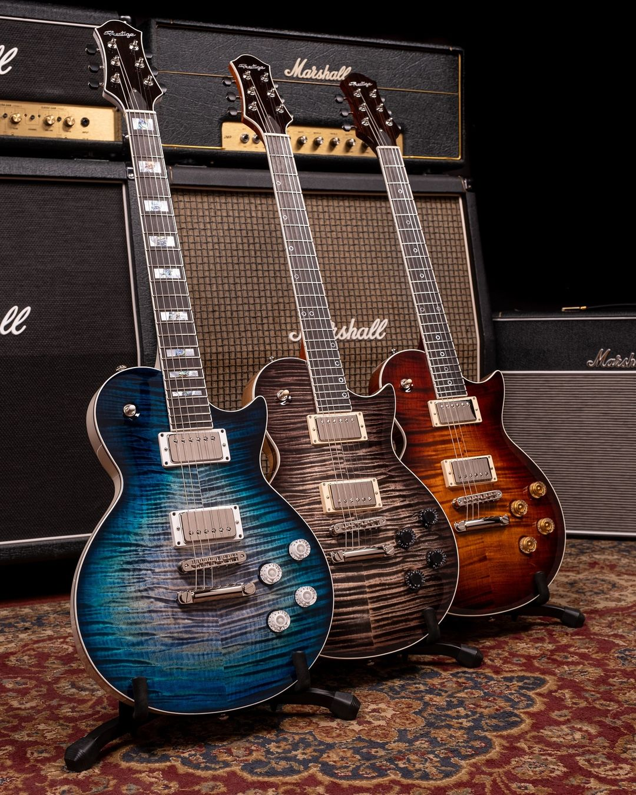
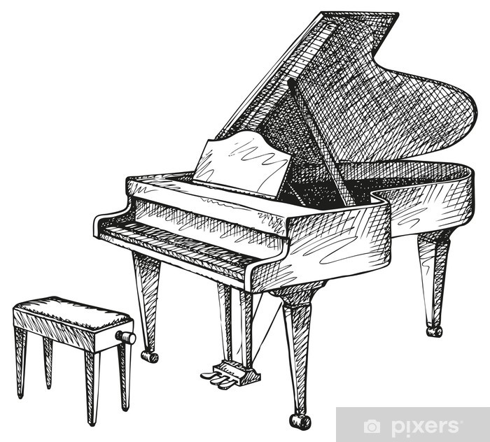
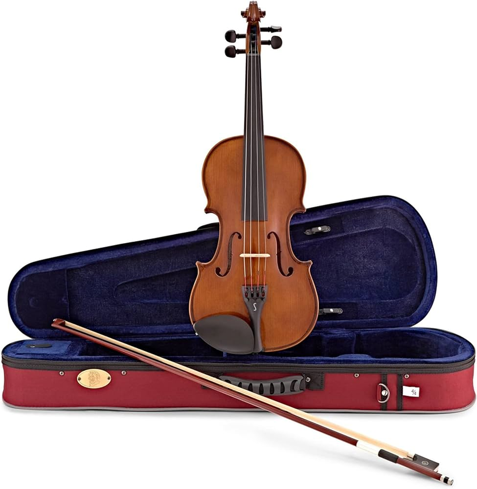
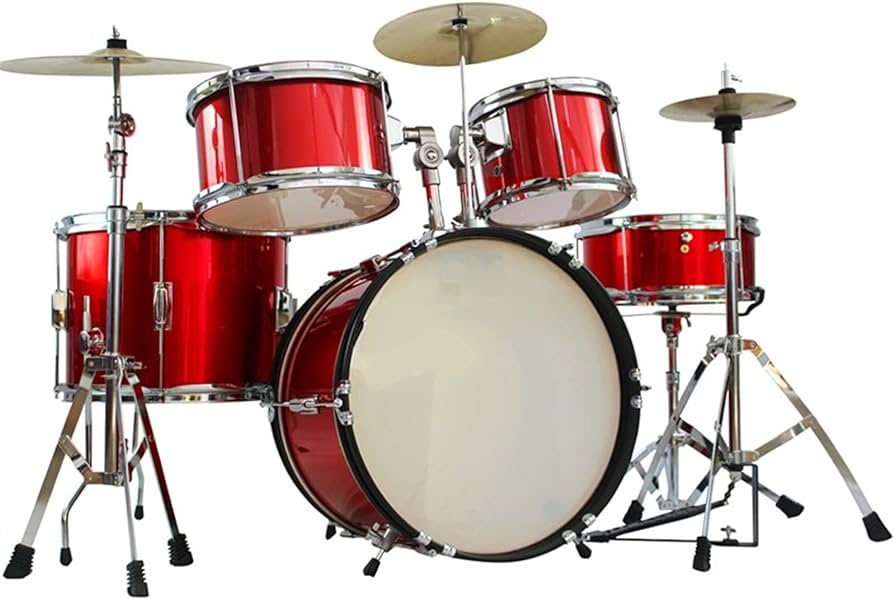

Guitar

The guitar is a fretted musical instrument that usually has six strings. It is typically played with both hands by strumming or plucking the strings with either a guitar pick or the fingers of one hand, while simultaneously fretting (pressing the strings against the frets) with the fingers of the other hand.
Piano

The piano is an acoustic, stringed musical instrument invented in Italy by Bartolomeo Cristofori around the year 1700. The piano is widely employed in classical, jazz, traditional, and popular music for solo and ensemble performances, accompaniment, and for composing and rehearsal.
Violin

The violin, sometimes known as a fiddle, is a wooden string instrument in the violin family. Most violins have a hollow wooden body. It is the smallest and highest-pitched instrument in the family in regular use.
Drums

Drums are percussion instruments and are the oldest form of musical instruments, dating back to thousands of years. The basic elements of a drum kit are the bass drum, snare drum, and hi-hat, along with various cymbals and toms.
Saxophone
The saxophone is a family of woodwind instruments. Saxophones are usually made of brass and played with a single-reed mouthpiece similar to that of the clarinet. They are commonly used in classical music, military and marching bands, jazz, and contemporary music.